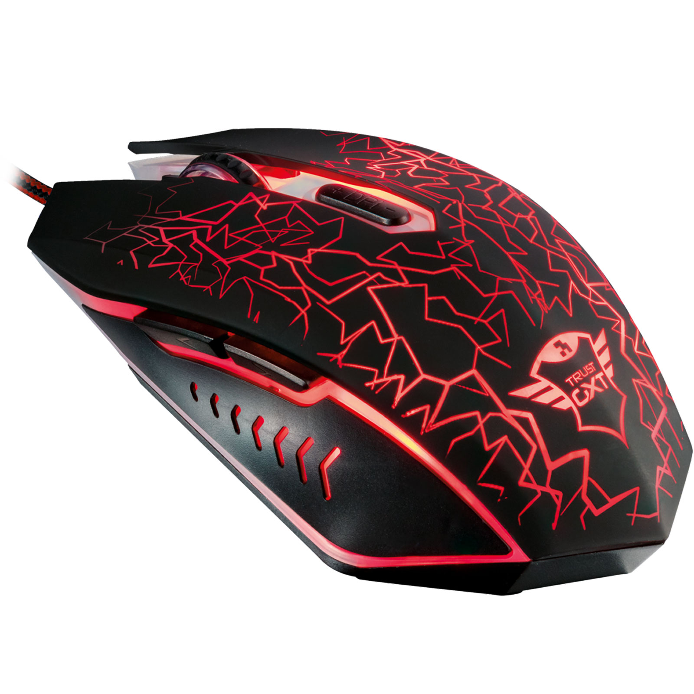

90$Taillée pour le jeu, et avec un dessus entièrement éclairé, la souris Trust Gaming GXT 105 sera le partenaire idéale pour remporter vos combats. Parfaitement adaptée pour les droitiers comme pour les gauchers, elle utilise notamment un capteur optique avec résolution ajustable de 600 à 2400 dpi.